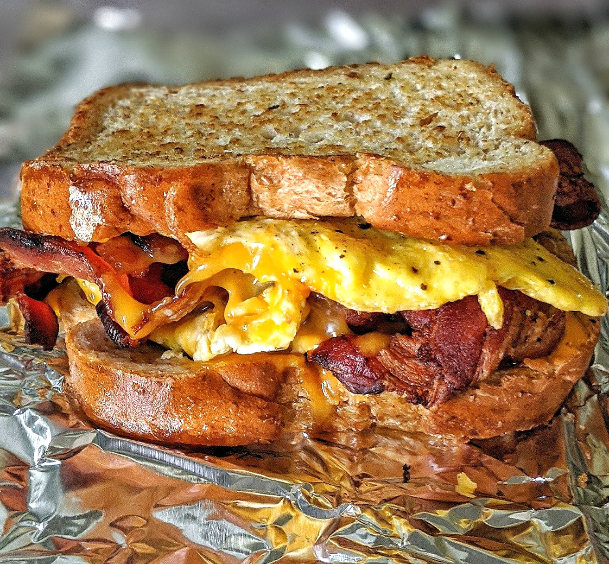

Home
Breakfast Sandwich

Description
A breakfast sandwich consists of eggs and bacon between bread. Cheese can be optionally added.
Ingredients
- 2 slices bread
- 2 eggs
- 2 slices of bacon
Steps
- Crack the 2 eggs into a small mixing bowl and mix.
- Toast the 2 slices of bread.
- Put bacon on frying pan and cook.
- Once the bacon is cooked, remove bacon and immediately put the eggs in the pan.
- Flip eggs once bottom is golden or cooked.
- After flipping, turn off heat to stove and let eggs sit for a minute.
- Form breakfast sandwich.